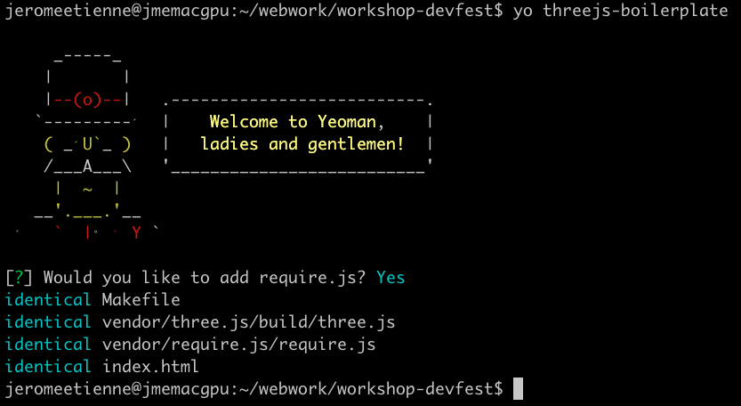
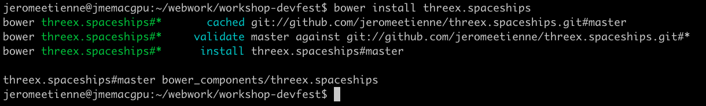

Flying Spaceships
A Game in THREE.js
Using Yeoman ?
- Optional
- Much Faster with it tho
- and time is limited!
Installing yeoman
sudo npm install -g yo
Installing three.js Generator
sudo npm install -g generator-threejs-boilerplate
Project Directory
create it
mkdir workshop-devfest
go in
cd workshop-devfest
Generate Three.js Boilerplate
yo threejs-boilerplate

Try Three.js Boilerplate
- Just a bunch of static files
make server
threex spaceships
- threex extensions for basic spaceships
- on github: repo /
demo
Import threex spaceships
javascript
bower install threex.spaceships

include threex spaceships
- using require.js (optional, only for rapidity)
- META explain how to include it manually
- META do that for all included threex
- using bower (optional only for rapidity)
- META all available on github
- META so can use zip or git itself, as you wish
threex spaceships with bower
bower install threex.spaceships
threex.planets
- META Why ? what does it provide for us
- META
- META what is it ? from threex page
- META url for repo + demo
- META iframe of earth demo
Meta
--
Whats next ?
- add sound with web audio api
A textual example
Content can be written in Markdown! New lines no longer need two angle brackets.
This will be in a separate paragraph.
A list of things
No need for multiple templates!
Unicode
- 林花謝了春紅 太匆匆
- 胭脂淚 留人醉 幾時重
- Matching Pairs «»‹› “”‘’「」〈〉《》〔〕
- Greek αβγδ εζηθ ικλμ νξοπ ρςτυ φχψω
- currency ¤ $ ¢ € ₠ £ ¥
A code example
// cool looking code
var func = function (arg1) {
return function (arg2) {
return "arg1: " + arg1 + "arg2: " + arg2;
};
};
console.log(func(1)(2)); // result is three